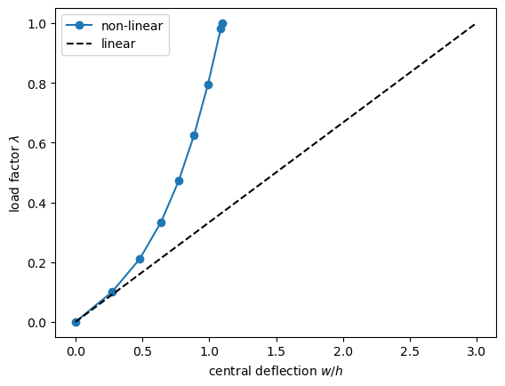
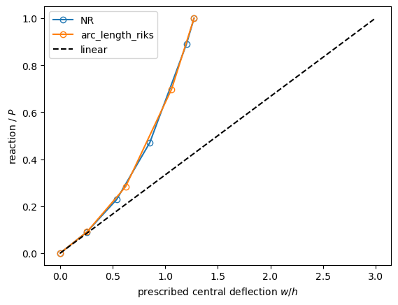
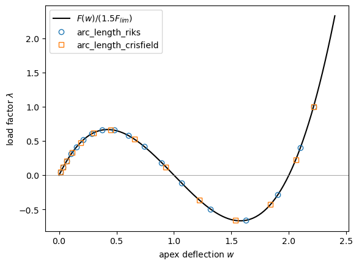
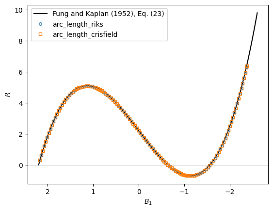

Non-linear static analysis with pyfe3d.solver#
The geometrically non-linear analyses of pyfe3d.solver.Analysis receive the callables of a model: the external and internal force vectors and the stiffness matrices. This example builds these callables for pyfe3d elements and uses them in five problems:
a simply supported plate with immovable edges under a uniform pressure, solved with a Newton-Raphson loop written by hand and with
Analysis;the same plate under a central point load, with the deflection prescribed instead of the load;
the plate with a configuration-dependent load, the piston-theory aerodynamic load;
the snap-through of the shallow von Mises truss of Crisfield (1991), traced with the arc-length methods;
the snap-through of a low sinusoidal arch of
BeamCelements, compared with the limit loads of Fung and Kaplan (1952).
The theory is in Non-linear static analyses, The Newton-Raphson method, Arc-length methods and Convergence criteria. The full references are at the end of the notebook.
[1]:
%matplotlib inline
import numpy as np
import matplotlib.pyplot as plt
from scipy.sparse import coo_matrix, csc_matrix
from pyfe3d import (DOF, DOUBLE, INT, BeamC, BeamCData, BeamCProbe, Quad4R,
Quad4RData, Quad4RProbe)
from pyfe3d.beamprop import BeamProp
from pyfe3d.shellprop_utils import isotropic_plate
from pyfe3d.solver import (Analysis, crisfield_weights, crisfield_zeta,
is_symmetric, solve)
Equilibrium and the tangent stiffness matrix#
Equilibrium is the null residual
with the load factor \(\lambda\). The internal forces of update_fint(..., nonlinear=1) come from the von Kármán strains of the elements, and \(\boldsymbol{K}_T = \boldsymbol{K}_{C0} + \boldsymbol{K}_{CNL} +
\boldsymbol{K}_G\), of update_KC0, update_KCNL and update_KG, is their exact Jacobian, so the Newton-Raphson iterations \(\boldsymbol{K}_T \delta
\boldsymbol{u} = -\boldsymbol{R}\) converge quadratically near the solution.
The class below wraps a list of elements into the four callables of Analysis, with the vectors and matrices of all the dofs: calc_fext the external forces times the load factor inc, calc_fint the internal forces, calc_kC \(\boldsymbol{K}_{C0}\), or \(\boldsymbol{K}_{C0} +
\boldsymbol{K}_{CNL}\) when NLgeom=True, and calc_kG \(\boldsymbol{K}_G\). The elements share one probe, so update_probe_xe and update_probe_ue are called before each element routine. Every call of calc_fint is recorded, to follow the iterations:
[2]:
class Model(object):
def __init__(self, elements, data, prop, x, N, fext):
self.elements = elements
self.data = data
self.prop = prop
self.x = x
self.N = N
self.fext = fext
n = len(elements)
self.KC0r = np.zeros(data.KC0_SPARSE_SIZE*n, dtype=INT)
self.KC0c = np.zeros(data.KC0_SPARSE_SIZE*n, dtype=INT)
KC0v = np.zeros(data.KC0_SPARSE_SIZE*n, dtype=DOUBLE)
self.KCNLr = np.zeros(data.KCNL_SPARSE_SIZE*n, dtype=INT)
self.KCNLc = np.zeros(data.KCNL_SPARSE_SIZE*n, dtype=INT)
self.KGr = np.zeros(data.KG_SPARSE_SIZE*n, dtype=INT)
self.KGc = np.zeros(data.KG_SPARSE_SIZE*n, dtype=INT)
for elem in elements:
elem.update_probe_xe(x)
elem.update_KC0(self.KC0r, self.KC0c, KC0v, prop)
self.KC0 = self.sparse(self.KC0r, self.KC0c, KC0v)
self.fint_calls = []
def sparse(self, r, c, v):
return coo_matrix((v, (r, c)), shape=(self.N, self.N)).tocsr()
def internal_forces(self, u):
fint = np.zeros(self.N)
for elem in self.elements:
elem.update_probe_xe(self.x)
elem.update_probe_ue(u)
elem.update_fint(fint, self.prop, nonlinear=1)
return fint
def KCNL(self, u):
v = np.zeros(self.data.KCNL_SPARSE_SIZE*len(self.elements))
for elem in self.elements:
elem.update_probe_xe(self.x)
elem.update_probe_ue(u)
elem.update_KCNL(self.KCNLr, self.KCNLc, v, self.prop)
return self.sparse(self.KCNLr, self.KCNLc, v)
def KG(self, u):
v = np.zeros(self.data.KG_SPARSE_SIZE*len(self.elements))
for elem in self.elements:
elem.update_probe_xe(self.x)
elem.update_probe_ue(u)
elem.update_KG(self.KGr, self.KGc, v, self.prop)
return self.sparse(self.KGr, self.KGc, v)
# callables of pyfe3d.solver.Analysis
def calc_fext(self, inc=1., silent=True):
return inc*self.fext
def calc_fint(self, c, silent=True):
self.fint_calls.append(c.copy())
return self.internal_forces(c)
def calc_kC(self, c=None, NLgeom=False, silent=True):
if c is None or not NLgeom:
return self.KC0
return self.KC0 + self.KCNL(c)
def calc_kG(self, c=None, NLgeom=False, silent=True):
return self.KG(c)
def analysis(self, bu, uk=None, **kwargs):
an = Analysis(self.calc_fext, self.calc_fint, self.calc_kC,
self.calc_kG, bu=bu, uk=uk)
for key, value in kwargs.items():
setattr(an, key, value)
return an
1. Plate under uniform pressure#
The square plate has \(a = b = 1\) m, \(h = 0.01\) m, \(E = 70\) GPa and \(\nu =
0.3\), and is meshed with 10 x 10 Quad4R elements. The edges are simply supported and immovable, \(u = v = w = 0\); the drilling rotations, which do not take part in the response of a flat plate, are held. The pressure \(q = 3 h
D/(0.00406 a^4)\) is the one whose linear central deflection, \(0.00406\, q
a^4/D\) with \(D = E h^3/(12 (1 - \nu^2))\), is \(3 h\), such that the membrane action stiffens the plate. It is lumped to the nodes with their tributary areas:
[3]:
def plate(nx=11, ny=11, a=1., h=0.01, E=70.e9, nu=0.3):
b = a
D = E*h**3/(12*(1 - nu**2))
q = 3*h*D/(0.00406*a**4)
prop = isotropic_plate(thickness=h, E=E, nu=nu)
xtmp = np.linspace(0, a, nx)
ytmp = np.linspace(0, b, ny)
xmesh, ymesh = np.meshgrid(xtmp, ytmp)
ncoords = np.vstack((xmesh.T.flatten(), ymesh.T.flatten(),
np.zeros(nx*ny))).T
x = ncoords.flatten()
nids = np.arange(nx*ny).reshape(nx, ny)
connectivity = zip(nids[:-1, :-1].flatten(), nids[1:, :-1].flatten(),
nids[1:, 1:].flatten(), nids[:-1, 1:].flatten())
data = Quad4RData()
probe = Quad4RProbe()
elements = []
for k, (n1, n2, n3, n4) in enumerate(connectivity):
elem = Quad4R(probe)
elem.n1, elem.n2, elem.n3, elem.n4 = n1, n2, n3, n4
elem.c1, elem.c2, elem.c3, elem.c4 = DOF*n1, DOF*n2, DOF*n3, DOF*n4
elem.init_k_KC0 = k*data.KC0_SPARSE_SIZE
elem.init_k_KCNL = k*data.KCNL_SPARSE_SIZE
elem.init_k_KG = k*data.KG_SPARSE_SIZE
elem.init_k_KA_beta = k*data.KA_BETA_SPARSE_SIZE
elem.update_rotation_matrix(x)
elem.update_probe_xe(x)
elements.append(elem)
N = DOF*nx*ny
X, Y = ncoords[:, 0], ncoords[:, 1]
edge = (np.isclose(X, 0) | np.isclose(X, a) | np.isclose(Y, 0)
| np.isclose(Y, b))
bk = np.zeros(N, dtype=bool)
bk[0::DOF] = edge
bk[1::DOF] = edge
bk[2::DOF] = edge
bk[5::DOF] = True
bu = ~bk
wx = np.full(nx, a/(nx - 1))
wx[[0, -1]] /= 2
wy = np.full(ny, b/(ny - 1))
wy[[0, -1]] /= 2
fext = np.zeros(N)
fext[2::DOF] = q*np.outer(wx, wy).flatten()
center = DOF*nids[nx//2, ny//2] + 2
return elements, data, prop, x, N, bu, fext, center, h
elements, data, prop, x, N, bu, fext, center, h = plate()
model = Model(elements, data, prop, x, N, fext)
u_lin = np.zeros(N)
u_lin[bu] = solve(model.KC0[bu, :][:, bu], fext[bu])
print('linear central deflection: w/h = %.4f' % (u_lin[center]/h))
linear central deflection: w/h = 2.9963
A Newton-Raphson loop written by hand#
The full load in a single increment, starting from \(\boldsymbol{u} = \boldsymbol{0}\): at each iteration the internal forces and \(\boldsymbol{K}_T\) are evaluated at the current displacements, and the correction solves \(\boldsymbol{K}_{T_{uu}} \delta \boldsymbol{u}_u = -\boldsymbol{R}_u\). The relative norm of the residual is printed:
[4]:
u = np.zeros(N)
for iteration in range(20):
R = model.internal_forces(u)[bu] - fext[bu]
rel = np.linalg.norm(R)/np.linalg.norm(fext[bu])
print('iteration %2d |R|/|F_ext| = %.2e' % (iteration, rel))
if rel < 1e-10:
break
KT = model.KC0 + model.KCNL(u) + model.KG(u)
u[bu] += solve(KT[bu, :][:, bu], -R)
u_hand = u.copy()
print('central deflection: w/h = %.6f' % (u_hand[center]/h))
iteration 0 |R|/|F_ext| = 1.00e+00
iteration 1 |R|/|F_ext| = 1.91e+02
iteration 2 |R|/|F_ext| = 1.58e+01
iteration 3 |R|/|F_ext| = 1.20e+01
iteration 4 |R|/|F_ext| = 2.28e+00
iteration 5 |R|/|F_ext| = 2.06e-01
iteration 6 |R|/|F_ext| = 1.18e-03
iteration 7 |R|/|F_ext| = 4.20e-08
iteration 8 |R|/|F_ext| = 6.63e-13
central deflection: w/h = 1.094278
Far from the solution the residual first grows; near it, it falls quadratically, each norm about the square of the previous one.
The same with Analysis#
Analysis.static(NLgeom=True) runs the same iterations, here with the full load in one increment, initialInc=1., and the convergence criterion of Crisfield (1991),
with the norms over the free dofs, weighted by the weights \(\boldsymbol{d}\) of crisfield_weights. The criterion is evaluated below at every recorded call of calc_fint, with crisfield_zeta:
[5]:
model.fint_calls = []
an = model.analysis(bu, initialInc=1., relTOL=1.e-9)
increments, cs = an.static(NLgeom=True, silent=True)
u_an = cs[-1]
w = crisfield_weights(model.KC0[bu, :][:, bu])
zetas = []
for c in model.fint_calls:
fint = model.internal_forces(c)[bu]
zetas.append(crisfield_zeta(fint - fext[bu], fext[bu], fint, w))
print('zeta:', ' '.join('%.1e' % z for z in zetas))
print('%-22s %12s' % ('', 'w/h'))
print('%-22s %12.8f' % ('linear', u_lin[center]/h))
print('%-22s %12.8f' % ('hand-written loop', u_hand[center]/h))
print('%-22s %12.8f' % ('Analysis', u_an[center]/h))
print('relative difference, Analysis vs hand-written: %.1e'
% (u_an[center]/u_hand[center] - 1))
zeta: 1.0e+00 9.7e-01 9.8e-01 7.8e-01 1.3e-01 7.8e-04 2.8e-08 1.1e-12
w/h
linear 2.99626733
hand-written loop 1.09427794
Analysis 1.09427794
relative difference, Analysis vs hand-written: 6.5e-14
The membrane action reduces the central deflection from \(3 h\) to about \(1.1 h\).
The load-deflection curve#
With smaller increments, initialInc=0.1, Analysis returns the load factors of the converged increments and their displacements, the equilibrium path:
[6]:
an = model.analysis(bu, initialInc=0.1, relTOL=1.e-9)
increments, cs = an.static(NLgeom=True, silent=True)
w_path = np.array([c[center] for c in cs])/h
plt.plot(np.r_[0, w_path], np.r_[0, increments], 'o-', label='non-linear')
plt.plot([0, u_lin[center]/h], [0, 1], 'k--', label='linear')
plt.xlabel('central deflection $w/h$')
plt.ylabel(r'load factor $\lambda$')
plt.legend()
plt.show()

2. Prescribed displacement#
The same plate under a central point load \(P\) whose linear deflection is \(3
h\), first with the load prescribed. Then the central deflection \(w_c\) of that solution is prescribed instead, \(\bar{u}_k = \lambda w_c\), at a dof moved from bu to the constrained ones, with uk and no external load. The reaction at that dof, \(\boldsymbol{R}_k\) of the partitioned system of Boundary conditions and prescribed displacements, equals the internal force there and must equal \(P\), with the same displacement field.
Displacement control is solved with Newton-Raphson and with the Riks method:
[7]:
elements, data, prop, x, N, bu, _, dof, h = plate()
f = np.zeros(N)
f[dof] = 1.
model = Model(elements, data, prop, x, N, f)
w1 = solve(model.KC0[bu, :][:, bu], f[bu])[np.flatnonzero(bu) == dof][0]
P = 3*h/w1
model.fext = P*f
an = model.analysis(bu, initialInc=0.2, relTOL=1.e-10)
increments, cs = an.static(NLgeom=True, silent=True)
u_load = cs[-1]
w_c = u_load[dof]
print('load control: P = %.6e N, w/h = %.6f' % (P, w_c/h))
bu_d = bu.copy()
bu_d[dof] = False
uk = np.zeros(N)
uk[dof] = w_c
model.fext = np.zeros(N)
paths = {}
print('%-16s %16s %16s %11s %18s' % ('method', 'reaction (N)', 'P (N)',
'rel. diff.', 'max |u - u_load|'))
for method in ['NR', 'arc_length_riks']:
an_d = model.analysis(bu_d, uk=uk, initialInc=0.2, relTOL=1.e-10,
NL_method=method)
increments_d, cs_d = an_d.static(NLgeom=True, silent=True)
reaction = model.internal_forces(cs_d[-1])[dof]
paths[method] = (increments_d, [model.internal_forces(c)[dof]
for c in cs_d])
print('%-16s %16.8e %16.8e %11.1e %18.2e'
% (method, reaction, P, reaction/P - 1,
np.abs(cs_d[-1] - u_load).max()))
load control: P = 1.660498e+04 N, w/h = 1.274070
method reaction (N) P (N) rel. diff. max |u - u_load|
NR 1.66049794e+04 1.66049794e+04 -6.5e-12 1.39e-13
arc_length_riks 1.66049794e+04 1.66049794e+04 -5.2e-11 8.74e-13
[8]:
for method, (lbd, reactions) in paths.items():
plt.plot(np.r_[0, lbd]*w_c/h, np.r_[0, reactions]/P, 'o-', mfc='none',
label=method)
plt.plot([0, 3], [0, 1], 'k--', label='linear')
plt.xlabel('prescribed central deflection $w/h$')
plt.ylabel('reaction / $P$')
plt.legend()
plt.show()

The reaction grows faster than the deflection: membrane stiffening.
3. Configuration-dependent load#
The aerodynamic load of the piston theory, \(\boldsymbol{F}_a = \lambda \beta
\boldsymbol{K}_{A_\beta} \boldsymbol{u}\), with the matrix of update_KA_beta of Quad4R, depends on the displacements. Moved to the left-hand side, it enters the internal forces with the load factor inc, and its load stiffness \(-\lambda \beta \boldsymbol{K}_{A_\beta}\), unsymmetric, enters \(\boldsymbol{K}_T\); calc_fext(c=...) gives the load vector of the current configuration, used by the geometrically linear analysis. See Load- and configuration-dependent
loads. The plate is that of problem 1, and \(\beta\) is chosen such that the aerodynamic load is 20 % of the pressure load in the linear solution:
[9]:
elements, data, prop, x, N, bu, fext, center, h = plate()
model = Model(elements, data, prop, x, N, fext)
r = np.zeros(data.KA_BETA_SPARSE_SIZE*len(elements), dtype=INT)
c = np.zeros(data.KA_BETA_SPARSE_SIZE*len(elements), dtype=INT)
v = np.zeros(data.KA_BETA_SPARSE_SIZE*len(elements), dtype=DOUBLE)
for elem in elements:
elem.update_probe_xe(x)
elem.update_KA_beta(r, c, v)
KA = coo_matrix((v, (r, c)), shape=(N, N)).tocsr()
u_lin = np.zeros(N)
u_lin[bu] = solve(model.KC0[bu, :][:, bu], fext[bu])
beta = 0.2*np.linalg.norm(fext[bu])/np.linalg.norm((KA @ u_lin)[bu])
BKA = beta*KA
print('K_C0 - beta*K_A symmetric:', is_symmetric((model.KC0 - BKA)[bu, :][:, bu]))
def calc_fint(c, inc=1., silent=True):
return model.internal_forces(c) - inc*(BKA @ c)
def calc_kC(c=None, NLgeom=False, inc=1., silent=True):
if c is None or not NLgeom:
return model.KC0
return model.KC0 + model.KCNL(c) - inc*BKA
def calc_fext(inc=1., silent=True, c=None):
if c is None:
return inc*model.fext
return inc*(model.fext + BKA @ c)
K_C0 - beta*K_A symmetric: False
The geometrically non-linear analysis with and without the aerodynamic load, and the geometrically linear analysis, whose load correction iterations with calc_fext(c=...) must give the solution of \((\boldsymbol{K}_{C0} - \beta
\boldsymbol{K}_{A_\beta}) \boldsymbol{u} = \boldsymbol{F}_{ext}\):
[10]:
an = Analysis(calc_fext, calc_fint, calc_kC, model.calc_kG, bu=bu)
an.initialInc = 1.
an.relTOL = 1.e-10
u_aero = an.static(NLgeom=True, silent=True)[1][-1]
R = (model.internal_forces(u_aero) - (model.fext + BKA @ u_aero))[bu]
print('non-linear, |R|/|F_ext| = %.1e' % (np.linalg.norm(R)
/np.linalg.norm(model.fext[bu])))
u_dead = model.analysis(bu, initialInc=1., relTOL=1.e-10).static(
NLgeom=True, silent=True)[1][-1]
an_lin = Analysis(calc_fext, None, calc_kC, None, bu=bu)
an_lin.relTOL = 1.e-12
an_lin.maxNumIter = 100
u_lin_aero = an_lin.static(silent=True)[1][-1]
ref = np.zeros(N)
ref[bu] = solve((model.KC0 - BKA)[bu, :][:, bu], model.fext[bu])
print('%-36s %10s' % ('', 'w/h'))
print('%-36s %10.6f' % ('non-linear, pressure only', u_dead[center]/h))
print('%-36s %10.6f' % ('non-linear, with aerodynamic load', u_aero[center]/h))
print('%-36s %10.6f' % ('linear, with aerodynamic load', u_lin_aero[center]/h))
print('%-36s %10.6f' % ('(K_C0 - beta K_A) u = F_ext', ref[center]/h))
print('linear analysis vs direct solution, max relative difference: %.1e'
% (np.abs(u_lin_aero - ref).max()/np.abs(ref).max()))
non-linear, |R|/|F_ext| = 8.8e-13
w/h
non-linear, pressure only 1.094278
non-linear, with aerodynamic load 1.093184
linear, with aerodynamic load 2.973885
(K_C0 - beta K_A) u = F_ext 2.973885
linear analysis vs direct solution, max relative difference: 2.2e-12
The aerodynamic load changes the deflection by 0.1 % in the non-linear analysis, where the membrane stiffness of the deflected plate dominates, and by 0.7 % in the linear one.
4. Snap-through of the von Mises truss#
A shallow von Mises truss loaded through a linear spring of stiffness \(k_s\): dof 0 is the apex deflection \(w\), positive towards the base, and dof 1 the loaded point. With the shallow truss theory of Crisfield (1991, Sec. 1.2, Eq. (1.7), p. 4), for two bars with \(E A/l^3 = 1\) and the rise \(z = 1\), the internal force at the apex is
\(F'(w) = 3 w^2 - 6 w + 2 = 0\) gives the limit points \(w = 1 \mp 1/\sqrt{3}\), with the loads \(\pm F_{lim}\), \(F_{lim} = 2/(3 \sqrt{3})\), and \(F = 0\) again at \(w = 2\), the inverted configuration. The spring in series carries the same force, so the load factor at a given \(w\) does not depend on its stiffness. The callables are written directly with NumPy:
[11]:
F_LIM = 2/(3*np.sqrt(3))
def von_mises_truss(frac, ks=10.):
fext = np.array([0., frac*F_LIM])
kC = csc_matrix(np.array([[2. + ks, -ks], [-ks, ks]]))
def calc_fext(inc=1., silent=True):
return inc*fext
def calc_fint(c, silent=True):
w = c[0]
return np.array([w**3 - 3*w**2 + 2*w + ks*(c[0] - c[1]),
ks*(c[1] - c[0])])
def calc_kC(c=None, NLgeom=False, silent=True):
return kC
def calc_kG(c=None, NLgeom=False, silent=True):
w = c[0]
return csc_matrix(np.array([[3*w**2 - 6*w, 0.], [0., 0.]]))
return Analysis(calc_fext, calc_fint, calc_kC, calc_kG)
The load is \(1.5 F_{lim}\). Load control would stop at the limit point; the arc-length methods add to the equilibrium the constraint \(\Delta \boldsymbol{u}^\top \Delta \boldsymbol{u} / (\boldsymbol{u}_{ref}^\top \boldsymbol{u}_{ref}) + \psi^2 \Delta\lambda^2 = \Delta s^2\), linearized (Riks 1979) or solved exactly (Crisfield 1981), and follow the path through the limit points, along which the load factor becomes negative, until the load factor 1.0 on the inverted configuration. On the path, \(\lambda = F(w)/(1.5 F_{lim})\), with the extremes \(\pm 1/1.5\):
[12]:
frac = 1.5
w_final = np.roots([1, -3, 2, -frac*F_LIM]).real.max()
print('%-22s %12s %12s %12s' % ('', 'max lambda', 'min lambda', 'final w'))
print('%-22s %12.6f %12.6f %12.6f' % ('Crisfield (1991)', 1/frac, -1/frac,
w_final))
paths = {}
for method in ['arc_length_riks', 'arc_length_crisfield']:
an = von_mises_truss(frac)
an.NL_method = method
an.initialInc = 0.05
an.static(NLgeom=True, silent=True)
inc = np.asarray(an.increments)
w = np.array([c[0] for c in an.cs])
paths[method] = (w, inc)
print('%-22s %12.6f %12.6f %12.6f' % (method, inc[:-1].max(), inc.min(),
w[-1]))
max lambda min lambda final w
Crisfield (1991) 0.666667 -0.666667 2.214631
arc_length_riks 0.658958 -0.658902 2.214631
arc_length_crisfield 0.664845 -0.661710 2.214631
The extremes are those of the converged increments, which sample the path near the limit points. The final apex deflection is the root \(w > 2\) of \(F(w) = 1.5 F_{lim}\):
[13]:
wplot = np.linspace(0, 2.4, 200)
plt.plot(wplot, (wplot**3 - 3*wplot**2 + 2*wplot)/(frac*F_LIM), 'k-',
label='$F(w)/(1.5 F_{lim})$')
for (method, (w, inc)), marker in zip(paths.items(), ['o', 's']):
plt.plot(w, inc, marker, mfc='none', label=method)
plt.axhline(0, color='gray', lw=0.5)
plt.xlabel('apex deflection $w$')
plt.ylabel(r'load factor $\lambda$')
plt.legend()
plt.show()

5. Snap-through of a low sinusoidal arch#
Fung and Kaplan (1952) write the equilibrium of a low arch hinged at both ends, of initial and deflected centre lines \(y_0 = \sum a_m L \sin(m \pi x/L)\) and \(y = \sum b_m L \sin(m \pi x/L)\), with the nondimensional rises and load of their Eq. (14),
For the sinusoidal arch under the sinusoidal load \(q_0 \sin(\pi x/L)\), rigid supports and no initial thrust, the symmetric path is their Eq. (23), \(B_1^3 - B_1 (\lambda_1^2 - 1) = \lambda_1 - R\), with the upper limit point of their Eq. (25),
and the lower one at \(\lambda_1 - \sqrt{4 (\lambda_1^2 - 1)^3/27}\), \(B_1 = \mp\sqrt{(\lambda_1^2 - 1)/3}\). With \(\lambda_1^2 < 5.5\) the arch buckles at the limit point, their Eq. (29), so the symmetric path is the one followed. Here \(\lambda_1 = 2.2\):
[14]:
lam1 = 2.2
d = np.sqrt(4/27*(lam1**2 - 1)**3)
R_cr, R_low = lam1 + d, lam1 - d
B1_lim = np.sqrt((lam1**2 - 1)/3)
print('R_cr = %.6f at B1 = %.4f, lower limit load %.6f at B1 = %.4f'
% (R_cr, B1_lim, R_low, -B1_lim))
R_cr = 5.096309 at B1 = 1.1314, lower limit load -0.696309 at B1 = -1.1314
The arch is modelled with 40 BeamC elements in the \(x\)-\(z\) plane, \(L =
100\), a rectangular section of thickness \(t = 1\) and width 1, \(E = 10^7\) and \(\nu = 0.3\), hinged at both ends (\(u = w = 0\)); the out-of-plane dofs \(v\), \(r_x\) and \(r_z\) are held at every node. The sinusoidal load is lumped to the nodes, with the reference load \(1.25 R_{cr}\), so that the load factor 1.0 is reached only on the inverted arch, after both limit points and two null loads. \(B_1\) is computed from the deflection at mid-span:
[15]:
def arch(lam1, R_ref, num_elements=40, L=100., t=1., b=1., E=1.e7, nu=0.3):
A = b*t
I = b*t**3/12
rA = np.sqrt(A/I)
a1L = 2*lam1/rA
q0 = R_ref*2*np.pi**4*E*I/(L**4*rA)
prop = BeamProp()
prop.A = A
prop.E = E
prop.G = E/2/(1 + nu)
prop.Iyy = I # bending in the x-z plane
prop.Izz = t*b**3/12
prop.J = b*t**3/3
num_nodes = num_elements + 1
xs = np.linspace(0, L, num_nodes)
x = np.vstack((xs, 0*xs, a1L*np.sin(np.pi*xs/L))).T.flatten()
data = BeamCData()
probe = BeamCProbe()
elements = []
for k in range(num_elements):
elem = BeamC(probe)
elem.n1, elem.n2 = k, k + 1
elem.c1, elem.c2 = DOF*k, DOF*(k + 1)
elem.init_k_KC0 = k*data.KC0_SPARSE_SIZE
elem.init_k_KCNL = k*data.KCNL_SPARSE_SIZE
elem.init_k_KG = k*data.KG_SPARSE_SIZE
elem.update_rotation_matrix(0., 1., 0., x)
elem.update_probe_xe(x)
elements.append(elem)
N = DOF*num_nodes
bk = np.zeros(N, dtype=bool)
bk[1::DOF] = True
bk[3::DOF] = True
bk[5::DOF] = True
for n in (0, num_nodes - 1):
bk[DOF*n + 0] = True
bk[DOF*n + 2] = True
fext = np.zeros(N)
weights = np.full(num_nodes, L/num_elements)
weights[[0, -1]] /= 2
fext[2::DOF] = -q0*np.sin(np.pi*xs/L)*weights
model = Model(elements, data, prop, x, N, fext)
mid = DOF*(num_elements//2) + 2
B1 = lambda u: (a1L + u[mid])/2*rA
return model, ~bk, B1
Both arc-length methods, with increments of at most 0.05 and the default tolerances. The limit loads of the model are the extremes of \(R\) along the converged increments:
[16]:
R_ref = 1.25*R_cr
print('%-22s %12s %10s %12s %10s' % ('', 'upper R', 'rel. diff.', 'lower R',
'rel. diff.'))
print('%-22s %12.6f %10s %12.6f %10s' % ('Fung and Kaplan (1952)', R_cr, '',
R_low, ''))
arch_paths = {}
for method in ['arc_length_riks', 'arc_length_crisfield']:
model, bu, B1 = arch(lam1, R_ref)
an = model.analysis(bu, NL_method=method, initialInc=0.05, maxInc=0.05,
maxArcLength=1e6)
increments, cs = an.static(NLgeom=True, silent=True)
R = R_ref*np.asarray(increments)
B1s = np.array([B1(c) for c in cs])
arch_paths[method] = (B1s, R)
kmin = np.argmin(R)
kmax = np.argmax(R[:kmin])
print('%-22s %12.6f %10.2e %12.6f %10.2e'
% (method, R[kmax], R[kmax]/R_cr - 1, R[kmin], R[kmin]/R_low - 1))
upper R rel. diff. lower R rel. diff.
Fung and Kaplan (1952) 5.096309 -0.696309
arc_length_riks 5.084297 -2.36e-03 -0.693671 -3.79e-03
arc_length_crisfield 5.084297 -2.36e-03 -0.693671 -3.79e-03
[17]:
B1plot = np.linspace(lam1, -2.6, 300)
plt.plot(B1plot, lam1 - B1plot**3 + B1plot*(lam1**2 - 1), 'k-',
label='Fung and Kaplan (1952), Eq. (23)')
for (method, (B1s, R)), marker in zip(arch_paths.items(), ['o', 's']):
plt.plot(B1s, R, marker, ms=4, mfc='none', label=method)
plt.axhline(0, color='gray', lw=0.5)
plt.gca().invert_xaxis()
plt.xlabel('$B_1$')
plt.ylabel('$R$')
plt.legend()
plt.show()

The path passes both limit points and the null loads between and after them, which the convergence criteria accept thanks to their round-off floor, see Non-linear static analyses. The limit loads of the 40 elements are within 0.4 % of the analytical ones; part of the difference is the sampling of the path by the converged increments.
References#
Crisfield, M. A., A fast incremental/iterative solution procedure that handles “snap-through”, Computers & Structures, 13(1-3), 55-62, 1981. https://doi.org/10.1016/0045-7949(81)90108-5
Crisfield, M. A., Non-linear Finite Element Analysis of Solids and Structures, Volume 1: Essentials, John Wiley & Sons, Chichester, 1991.
Fung, Y. C. and Kaplan, A., Buckling of low arches or curved beams of small curvature, NACA Technical Note 2840, National Advisory Committee for Aeronautics, Washington, 1952. https://ntrs.nasa.gov/citations/19930083579
Riks, E., An incremental approach to the solution of snapping and buckling problems, International Journal of Solids and Structures, 15(7), 529-551, 1979. https://doi.org/10.1016/0020-7683(79)90081-7